读者
Before importing or adding patrons be sure to set up your patron categories.
添加一个新读者
Patrons are added by going to the ‘Patrons’ module.
Get there: Patrons
Once there you can add a new patron.
Click ‘New patron’

The fields that appear on the patron add form can be controlled by editing the BorrowerUnwantedField system preference.
Required fields are defined in the BorrowerMandatoryField system preference
First, enter the identifying information regarding your patron

‘Salutation’ is populated by the BorrowersTitles system preference
Note
If you’d like to prevent full names from printing on slips and you’re not using the Initials or Other name fields for anything else, you can use them for shortened versions of the name to then be printed on the slip.
For example:
Firstname: Nicole C. Surname: Engard Initials: NCE
Then on the slip you can have it print the <<borrowers.initials>> instead of the full name (NCE).
Or you could do something like this:
Firstname: Nicole Surname: Engard Initials: E
Then on the slip you can have it print the <<borrowers.initials>>, <<borrowers.firstname>> instead of the full name (E, Nicole).
If this patron is a child, you will be asked to attach the child patron to an adult patron (guarantor)
Note Guarantors can only be attached to patrons whose category is of the ‘Child’, ‘Professional’ or ‘Organization’ type.

If the guarantor is a patron of the library, click ‘Search to add’ to search your system for an existing patron
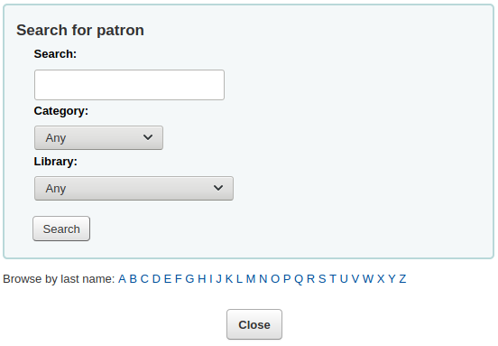
Click ‘Select’ to choose the patron

The relationships are set using the borrowerRelationship system preference
Note
It is possible to add more than one guarantor to a patron account (both parents for example).
If the guarantor is not a patron, you can still add their information in the ‘Non-patron guarantor’ section.
Next enter the main address and contact information
Note
The street type is populated by the ROADTYPE authorized values

For contact information, note that the primary phone number and primary email address are the ones that appear on notices and slips printed during circulation (receipts, transfer slips and hold slips). The primary email is also the one that overdue notices and other messages go to.
You can also record an alternate address for each patron. This could be used in an academic setting to store the patron’s home address for example.
Each patron can have an alternate contact. An alternate contact could be a parent or guardian, for example.

The library management section includes values that are used within the library
The card number field is automatically calculated if you have the autoMemberNum system preference set that way
Note
For a newly installed system this preference will start at 1 and increment by 1 each time after. To have it start with the starting number of your barcodes, enter the first barcode by hand in the patron record and save the patron. After that the field will increment that number by 1.
If you accidentally chose the wrong patron category at the beginning you can fix that here
Sort 1 and 2 are used for statistical purposes within your library
You can create drop-down menus for these fields by adding values in the Bsort1 and Bsort2 authorized values categories
‘Allow auto-renewal of items’ is used to control whether this patron’s checkouts will be renewed according to the circulation rules. If set to ‘Yes’, items for which automatic renewal is enabled in the circulation rules will be automatically renewed. This requires the automatic_renewal cronjob to run daily. If set to ‘No’, items for which automatic renewal is enabled in the circulation rules will not be automatically renewed.
‘Check for previous checkouts’ is used to set the patron’s personal preference regarding checking their circulation history to see if they have borrowed This item in the past. This overrides the setting of the patron category and of the CheckPrevCheckout system preference.
Next, the library set-up section includes additional library settings

The registration date will automatically be filled in with today’s date
The expiry date will automatically be calculated based on your patron category settings
The OPAC note is a note for the patron, it will appear in the patron’s online account on the OPAC

Note
See also OPAC messages
The Circulation note is meant solely for your library staff and will appear when the circulation staff goes to check an item out to the patron
The ‘OPAC/Staff interface login’ section asks for the username and password to be used by the patron (or staff member) to log into their account in the OPAC and for staff to log in to the staff interface.
Staff will only be able to use this login information to log in to the staff interface if they have at least the catalogue permission.
If you have enabled the housebound module (with the HouseboundModule system preference), you will be able to choose a housebound role for this patron.

If you have set additional patron attributes in the administration module, these will appear next
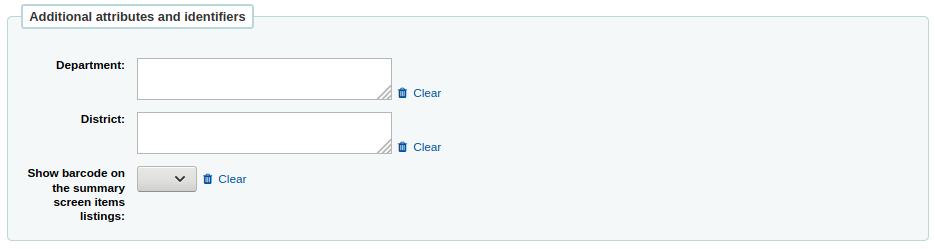
Finally, if you have the EnhancedMessagingPreferences system preference set to ‘allow,’ you can choose the messaging preferences for this patron.

See the definition of each notice in the advance notices and hold notices section
Important
These preferences will override any you set via the patron categories
Important
These preference can be altered by the patron via the OPAC if the EnhancedMessagingPreferencesOPAC system preference is set to ‘show’
Once finished, click ‘Save’
If the system suspects this patron is a duplicate of another it will warn you.
Note
See the PatronDuplicateMatchingAddFields system preference to see or change which fields are used to detect duplicate patrons. The default is the surname, the firstname and the date of birth.
If you have set a minimum or upper age limit on the patron category and are requiring that the birth date be filled in, Koha will warn you if the patron you’re adding is too old or young for the patron category you have selected:

If the patron’s category has an enrollment fee, the fee will be charged to the patron’s account when the account is created. You can then manage the charge in the patron’s accounting tab.
Quick add a patron
If your circulation desk is very busy and you want to register patron quickly, you can use the ‘quick add’ feature. It’s a shortened version of the add patron form with only a couple of necessary fields to fill out.
This feature uses two system preferences: BorrowerMandatoryField and PatronQuickAddFields. These are the two system preferences that control which fields are in the quick add form.
To quick add a patron, go to the Patrons module
Get there: Patrons
Click on the ‘Quick add new patron’ button.
You will be asked to choose a patron category.
Then, you will be presented with a shortened form.

Once the form is filled out, click on ‘Save’.
If you need to access the full form, you can click on ‘Show full form’ above the ‘Save’ button.
Add a staff patron
All staff members must be entered into Koha as patrons of the ‘Staff’ type. Follow the steps in Add a Patron to add a staff member. To give the staff member permissions to access the staff client, follow the steps in patron permissions
Important
Remember to assign your staff secure usernames and passwords since these will be used to log into the staff client.
Add a statistical patron
One way to track use of in house items is to “check out” the materials to a statistical patron. The “check out” process doesn’t check the book out, but instead tracks an in house use of the item. To use this method for tracking in house use you first will need a patron category set up for your statistical patron.

Next, you will need to create a new patron of the statistical type.

Next, follow the steps put forth in the ‘Add a new patron’ section of this manual. Since this patron is not a real person, simply fill in the required fields, the correct library and nothing else.
To learn about other methods of tracking in house use visit the tracking inhouse use section of this manual.
Duplicate a patron
Sometimes when you’re adding a new family to your system you don’t want to type the contact information over and over. Koha allows for you to duplicate a patron and change only the parts you want to (or need to) change.
Open the patron you want to use as your base (the patron you want to duplicate information from)
Click the ‘Duplicate’ button at the top of their record
All of the fields with the exception of first name, card number, username and password have been duplicated. Fill in the missing pieces and click ‘Save’

Note
Clicking in a field that is already populated with data will clear that field of all information (making it easier for you to type in something different)
You will be brought to your new patron

Add patron images
If you would like you can add patron images to help identify patrons. To enable this feature you must first set the patronimages preference to ‘Allow’.
If the preference is set to ‘Allow’ you will see a placeholder image under the patron’s name and box to upload a patron image below the basic contact information.
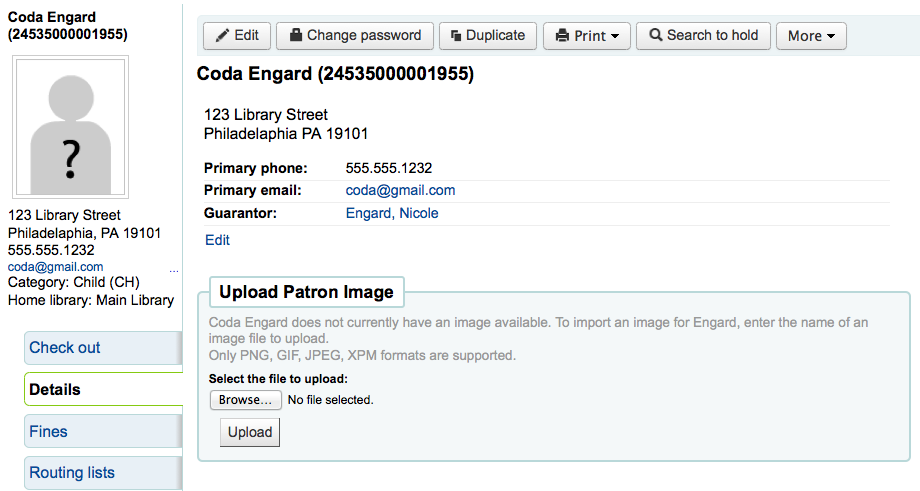
In the ‘Upload patron image’ box click ‘Browse’ to find the image on your computer and ‘Upload’ to load the image on to the patron record.

Important
There is a limit of 100K on the size of the picture uploaded and it is recommended that the image be 200x300 pixels, but smaller images will work as well.
Editing patrons
Patrons in Koha can be edited using one of many edit buttons.
To edit the entire patron record simply click the ‘Edit’ button at the top of the patron record.
Patron passwords are not recoverable. The stars show on the patron detail next to the password label are always there even if a password isn’t set. If a patron forgets their password the only option is to reset their password. To change the patron’s password, click the ‘Change password’ button.

Koha cannot display existing passwords as they are encrypted in the database. Leave the field blank to leave password unchanged.
This form can automatically generate a random password if you click the link labeled “Click to fill with a randomly generated suggestion. Passwords will be displayed as text.”
To edit a specific section of the patron record (for example the ‘Library use’ section) click the ‘Edit’ button beside the section.

A patron image can be added by browsing for the image on your machine from the ‘Manage patron image’ section.

This form will not appear if you have the patronimages system preference to not allow patron images.
To add patron images in bulk, use the Upload patron images tool.
Patrons can also be blocked from checking items out by setting Patron flags

If you would like your circulation staff to confirm a patron’s address before checking items out to the patron, you can see the ‘Gone no address’ flag

If the patron reports that they have lost their card you can set the ‘Lost card’ flag to prevent someone else from using that card to check items out

If you would like to bar a patron from the library you can add a manual restriction
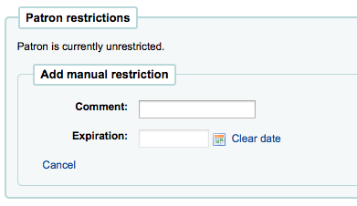
Note
This flag can automatically be set with the Overdue/notice status triggers
If you enter in a date and/or note related to the restriction you will see that in the restricted message as well

Children patrons do not become adults automatically in Koha unless you have the Update patron categories cron job running. To upgrade a child patron to and adult patron category manually go to the ‘More’ menu and choose ‘Update child to adult patron’

You will then be presented with a pop up window asking which one of your adult patron categories this Child should be updated to
Renew patron account
When renewing a patron account you can either edit the the expiry date manually in the patron record or use the ‘Renew patron’ option from the More menu in the toolbar at the top.

Using the latter the new expiry date will be calculated using the enrollment period configured for the patron category of the user. The system preference BorrowerRenewalPeriodBase determines if the new expiry date will be calculated from the current date or from the old expiry date.
One advantage of using the ‘Renew patron’ option is that it will be logged as a membership renewal in the action_logs table and be visible as such when using the Log viewer or the Modificaton log from the patron account.
The renewal date of the patron account will be visible on the details tab.

If the patron is in a patron category with a membership fee, the charge will also be added upon renewal. You can then manage the charge in the patron’s accounting tab.
Deleting a patron account
From the ‘More’ drop-down, the patron account can be deleted.

There will be an alert if the patron has checkouts, holds, fines or credits.
If a patron has current checkouts, the deletion will not be possible.

If a patron has outstanding fines, the deletion will not be possible.

If a patron has unused credits, the option to delete the patron is possible but there will be a warning.

If a patron has existing holds on their account, the option to delete the patron is possible. The hold will be cancelled and moved to the old reserves table.

Managing patron self edits
If you are allowing patrons to edit their accounts via the OPAC with the OPACPatronDetails preference then you will need to approve all changes via the staff client before they’re applied. If there are patron edits awaiting action they will appear on the staff client dashboard below the modules list (along with other items awaiting action).

Note
Superlibrarians will see modifications for any branch, other staff will only see modifications for patrons who belong to their logged in branch.
When you click the ‘Patrons requesting modifications’ link you will be brought to a list of patrons with requested changes.

From here you can ‘Approve’ and apply the changes to the patron record, ‘Delete’ and remove the changes or ‘Ignore’ and keep the changes pending to review later.
If you would like to see the entire patron record you can click the ‘Patron details’ links to the right of the buttons. This will open in a new tab.
Merging patron records
If you accidentally end up with one patron with two cards it is possible to merge their records together so that you don’t lose their loan history or holds.
In the patron list, check the boxes next to the records you want to merge and click on the ‘Merge selected patrons’ button.

Note
It is possible to merge more than two records at a time.
Select the patron record you want to keep
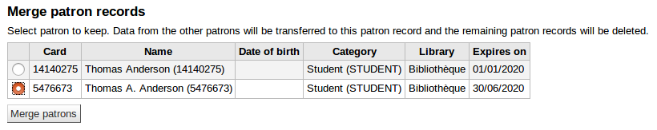
If necessary, click the ‘Compare patrons’ button to see the differences between the different accounts.

Click the ‘Merge patrons’ button.
The checkouts and statistics will be transferred to the right record and the other one will be deleted.

Patron permissions
Patron permissions are used to allow staff members access to the staff client.
Important
In order for a staff member to log into the staff interface they must have (at the very least) ‘catalogue’ permissions which allow them to view the staff interface.
Setting patron permissions
On the patron record click ‘More’ and choose ‘Set permissions’ to alter patron permissions

You will be presented with a list of preferences, some of which can be expanded by clicking the ‘Show details’ link on the right title.

In all cases, if the parent permission is checked, the user has all the child permissions. If you want to set permissions on a more granular level, expand the section and only check the permissions you want that user to have.
Patron permissions defined
Access to all librarian functions (superlibrarian)
Note
With this selected there is no need to choose any other permissions
Check out and check in items (circulate)
Remaining circulation permissions (circulate_remaining_permissions)
This permission grants all circulation rights except those covered by permissions listed below
Force checkout if a limitation exists (force_checkout)
With this permission a staff member will be allowed to override a check out restriction in the following cases:
age restriction
the item is issued to another patron
the item is not for loan
the patron has overdue items
the item is lost
the item is a high demand item
the item is on hold
Mark checkout notes as seen/not seen (manage_checkout_notes)
- The permission to manage the checkout notes written by users
through the OPAC
Manage restrictions for accounts (manage_restrictions)
Grants permission to the staff member to lift a restriction that might be on the patron’s record
Execute overdue items report (overdues_report)
The permission to run the overdues reports found under Circulation
Override blocked renewals (override_renewals)
With this permission, a staff member can override renewals if there is a restriction
Requires that the staff member also has circulate_remaining_permissions
Staff access, allows viewing the catalogue in staff client (catalogue) Required for staff login.
Important
Must be given to all staff members to allow them to login to the staff interface
Manage Koha system settings (Administration panel) (parameters)
Manage account debit and credit types (manage_accounts)
This gives access to the debit types section
Manage additional fields for baskets or subscriptions (manage_additional _fields)
This gives access to the additional fields section
Important
This permission requires that the staff member also have the ‘Edit an existing subscription’ permission from the ‘Manage serial subscriptions’ section and the ‘Manage basket and order lines’ permission from the ‘Acquisition and/or suggestion management’ section
Manage audio alerts (manage_audio_alerts)
The ability to access the audio alerts configuration in the administration module.
Manage authorized value categories and authorised values (manage_auth_ values)
The ability to access the auhorized values configuration in the administration module.
Manage circulation rules (manage_circ_rules)
The ability to access the circulation and fines rules configuration in the administration module.
Manage circulation rules form any library (manage_circ_rules_from_ any_libraries)
If not set the logged in user can only edit circulation rules from their own library
The staff member still has to have the ‘Manage circulation rules’ permission above.
Manage cities and towns (manage_cities)
The ability to access the cities and towns configuration in the administration module.
Manage classification sources and filing rules (manage_classifications)
The ability to access the classification sources configuration in the administration module.
Manage column configuration (manage_column_config)
The ability the access the configure columns page in the administration module.
Manage Did you mean? configuration (manage_didyoumean)
The ability to access the Did you mean? configuration in the administration module.
Manage item circulation alerts (manage_item_circ_alerts)
The ability to access the item circulation alerts configuration in the administration module.
Manage item search fields (manage_item_search_fields)
The ability to access the item search fields configuration in the administration module.
Manage item types (manage_itemtypes)
The ability to access the item types configuration in the administration module.
Manage keyboard shortcuts for the advanced cataloging editor (manage_ keyboard_shortcuts)
The ability to access the keyboard shortcuts configuration in the administration module
Manage libraries and library groups (manage_libraries)
The ability to access the libraries and library groups configuration pages in the administration module.
Manage Mana KB content sharing (manage_mana)
The ability to access the share content with Mana KB in the administration module
Manage MARC bibliographic and authority frameworks and test them (manage_marc_frameworks)
The ability to access the MARC bibliographic framework, authority types, Koha to MARC mapping, and MARC Bibliographic framework test configuration areas in the administration module.
Manage record matching rules (manage_matching_rules)
The ability to access the record matching rules configuration in the administration module.
Manage OAI sets (manage_oai_sets)
The ability to access the OAI sets configuration in the administration module.
Manage extened patron attributes (manage_patron_attributes)
The ability to access the patron attribute types configuration in the administration module.
Manage patron categories (manage_patron_categories)
The ability to access the Patron categories configuration in the administration module.
Manage search engine configuration (manage_search_engine_config)
The ability to access the Search engine configuraton in the administration module. Note: This area will only be visible when the SearchEngine system preference is set to ‘Elasticsearch’.
Manage Z39.50 and SRU server configuration (manage_search_targets)
The ability to access the Z39.50/SRU servers configuration in the administration module.
Manage SMS cellular providers (manage_sms_providers)
The ability to access the SMS cellular providers configuration in the administration module. Note: This area will only be visible when the SMSSendDriver system preference is set to ‘Email’.
Manage global system preferences (manage_sysprefs)
The ability to access the global system preferences in the administration module.
Manage library transfer limits and transport cost matrix (manage_transfers)
The ability to access the library transfer limits and transport cost matrix configuration pages in the administration module.
Manage usage statistics settings (manage_usage_stats)
The ability to access the share your usage statistics configuration in the administration module.
Remaining system parameters permissions (parameters_remaining_permissions)
The ability to access all remaining areas in the administration module.
Add, modify and view patron information (borrowers)
Add, modify and view patron information (edit_borrowers)
The ability to access the Patrons module to view patron files, as well as adding new patrons and editing patron files
View patron infos from any libraries (view_borrower_infos_from_any_libraries)
If not set the logged in user will only be able to access patron information from their own library or group of libraries.
Set user permissions (permissions)
The ability to set permissions for other staff members
Place and modify holds for patrons (reserveforothers)
Modify holds priority (modify_holds_priority)
Allows staff members to alter the holds priority (moving patrons up and down the queue)
Place holds for patrons (place_holds)
Allows staff members to place holds in the staff interface
Edit catalog (Modify bibliographic/holdings data) (editcatalogue)
Use the advanced cataloging editor (advanced_editor)
Grants the ability to use the advanced cataloging editor in the cataloging module
Note
Staff members with this permission need to also have the ‘Edit catalog (Modify bibliographic/holdings data)’ permission
Delete all items at once (delete_all_items)
Ability to use the ‘Delete all items’ option found under the ‘Edit’ menu in cataloging
Edit catalog (Modify bibliographic/holdings data) (edit_catalogue)
Ability to access all cataloging functions via the Cataloging page
Edit items (edit_items)
Ability to make edits to item/holdings records, but not bibliographic records
Limit item modification to subfields defined in the SubfieldsToAllowForRestrictedEditing system preference (edit_items_restricted)
If checked, the staff member will only be able to modify some item subfields
Note
Please note that the ‘Edit items’ permission is still required
Fast cataloging (fast_cataloging)
The ability to catalog using only the Fast add framework found on the Circulation page
Manage patrons fines and fees (updatecharges)
Discount debits for patrons (discount)
Grant the ability to apply discounts to charges
Payout credits to patrons (payout)
Grant the ability to reimburse credits to patrons
Refund payments to patrons (refund)
Grant the ability to refund payments that patrons have already made to the library
Remaining permissions for managing fines and fees (remaining_permissions)
Grant the ability to manage fines and fees other than the actions described in the other subpermissions (dicounts, payouts, refunds and writeoffs)
Write off fines and fees (writeoff)
Grants the ability to write off patron fees
Acquisition management (acquisition)
警告
All the acquisitions sub-permissions give access to the acquisitions home page. That means that staff who have one or more of the following permissions will be able to view the budgets, search and view vendor information, and view invoices.
Add and delete funds (but can’t modify funds) (budget_add_del)
Grants the ability to add funds and delete funds within a budget
Note that the budget_manage and budget_modify permissions are required for this one to work correctly
Manage funds (budget_manage)
Grants the ability to access the fund administration page
Note that this only gives viewing access to the page, you will need to give your staff budget_add_del and budget_modify if you want them to be able to make changes to the funds
Manage all funds (budget_manage_all)
Grants viewing access to all funds regardless of restrictions on them (owner, user or library restrictions)
Note that the budget_manage permission is required
Modify funds (can’t create lines, but can modify existing ones) (budget_modify)
Grants the ability to edit fund information and amounts
Note that the budget_add_del and budget_manage permissions are required for this one to work correctly
Manage contracts (contracts_manage)
Grants the ability to add, edit and delete contracts with vendors
Manage currencies and exchange rates (currencies_manage)
The ability to access the Currencies and exchange rates configuration page.
Delete baskets (delete_baskets)
Grants the ability to delete baskets
The staff member must also have the order_manage permission to be able to view the baskets in order to delete them.
Delete invoices (delete_invoices)
Grants the ability to delete invoices
Manage EDIFACT transmissions (edi_manage)
Grants the ability to access the EDI account administration page, the library EANs administration page and access sent EDI messages
Edit invoices (edit_invoices)
Grants the ability to edit invoices (modify invoice information such as the invoice number, billing or shipping date, add adjustments, etc.)
The staff member will not be able to receive orders against an invoice unless they have the order_receive permission as well
Manage basket groups (group_manage)
Grants the ability to create, edit, close and delete basket groups
Merge invoices (merge_invoices)
Grants the ability to merge invoices
Manage baskets and order lines (order_manage)
Grants the ability to place orders, including creating baskets, adding order lines, closing baskets, etc.
Manage all baskets and order lines, regardless of restrictions on them (order_manage_all)
Grants the ability to manage all baskets and orders even if they are restricted to the owner, users or library
Note that the order_manage permission is required
Receive orders and manage shipments (order_receive)
Grants the ability to create invoices, receive items and claim late orders
Manage budgets (period_manage)
Grants access to the budget administration page and the ability to create, edit and delete budgets
This permission does not give the ability to edit budget funds.
Manage budget plannings (planning_manage)
Grants the ability to view budget planning
Note that the budget_manage and the period_manage permissions are required for this one to work
Reopen closed invoices (reopen_closed_invoices)
Grants the ability to reopen closed invoices
Manage vendors (vendors_manage)
Grants the ability to add, edit and delete vendors
Note that vendors are used in the acquisition and the serials module.
Suggestions management
Manage purchase suggestions (suggestions_manage)
Grants the ability to create and manage purchase suggestions, including creating new suggestions and changing the suggestions’ statuses
Use all tools (tools)
Access to the files stored on the server (access_files)
Access to the Upload tool
Upload patron images in batch or one at a time (batch_upload_patron_images)
Access to the Image upload tool
Delete old borrowers and anonymize circulation/reading history (deletes borrower reading history) (delete_anonymize_patrons)
Access to the Anonymize patron tool
Define days when the library is closed (edit_calendar)
Access to the Calendar/holidays tool
Write news for the OPAC and staff interfaces (edit_news)
Access to the News tool
Set notice/status triggers for overdue items (edit_notice_status_triggers)
Access to the Overdue notice status/triggers tool
Define notices (edit_notices)
Access to the Notices and slips tool
Perform batch modification of patrons (edit_patrons)
Access to the Batch patron modification tool
Edit quotes for the quote-of-the-day feature (edit_quotes)
Access to the Quote of the Day (QOTD) Editor
Export bibliographic and holdings data (export_catalog)
Access to the Export data tool
Import patron data (import_patrons)
Access to the Import patrons tool
Perform inventory of your catalog (inventory)
Access to the Inventory tool
Perform batch deletion of items (items_batchdel)
Access to the Batch item deletion tool
Perform batch modification of items (items_batchmod)
Access to the Batch item modification tool
Limit batch item modification to subfields defined in the SubfieldsToAllowForRestrictedBatchmod preference (items_batchmod_restricted)
Restricts the batch item modification tool to modify only the subfields defined in the SubfieldsToAllowForRestrictedBatchmod preference
Please note that items_batchmod permission is still required
Create printable labels and barcodes from catalog and patron data (label_creator)
Access to the Patron card creator, the Label creator and the Quick label creator tools
Manage CSV export profiles (manage_csv_profiles)
Access to the CSV profiles tool
Add, edit and delete patron lists and their contents (manage_patron_lists)
Access to the Patron lists tool
Manage staged MARC records, including completing and reversing imports (manage_staged_marc)
Access to the Manage staged MARC records tool
Manage MARC modification templates (marc_modification_templates)
Access to the MARC modification templates tool
Moderate patron comments (moderate_comments)
Access to the Comments tool
Moderate patron tags (moderate_tags)
Access to the Tags tool
Perform batch deletion of records (bibliographic or authority) (records_batchdel)
Access to the Batch record deletion tool
Perform batch modification of records (bibliographic or authorities) (records_batchmod)
Access to the Batch record modification tool
Manage rotating collections (rotating_collections)
Access to the Rotating collections tool
Schedule tasks to run (schedule_tasks)
Access to the Task scheduler tool
Stage MARC records into the reservoir (stage_marc_import)
Access to the Stage MARC records tool
Upload any file (upload_general_files)
Access to upload files via the Upload tool
Upload local cover images (upload_local_cover_images)
Access to the Upload local cover image tool as well as permission to add and delete local cover images from the record detail page
Manage uploaded files (upload_manage)
Access to uploaded files via the Upload tool
Note that the upload_general_files permission is required for this permission to work
Browse the system logs (view_system_logs)
Access to the Log viewer tool
Edit authorities (editauthorities)
Grants the ability to create, edit and delete authority records
Note that it is possible to search authority records with only the catalogue permission
Manage serial subscriptions (serials)
Check the expiration of a serial (check_expiration)
Gives ability to check the expiration date of serials
Claim missing serials (claim_serials)
Gives the ability to claim missing issues
Create a new subscription (create_subscription)
Gives the ability to add new subscriptions
Delete an existing subscription (delete_subscription)
Gives the ability to delete serial subscriptions
Edit an existing subscription (edit_subscription)
Gives the ability to edit existing serial subscriptions
This permission does not include the ability to delete or create a subscription
Serials receiving (receive_serials)
Gives the ability to receive issues of existing subscriptions
Renew a subscription (renew_subscription)
Gives the ability to renew serial subscriptions
Routing (routing)
Gives the ability to manage routing lists
Manage subscriptions from any branch (superserials)
This permission is only useful if the IndependentBranches system preference is used
Allow access to the reports module (reports)
Reports found on the Circulation page are not controlled by this permission; this only controls access to the :ref:Reports module <reports-label>`
Reports in the Statistics wizard section and the other reports on the main reports page can be run with any one of the following permissions. They only affect the SQL reports.
Create SQL reports (create_reports)
The ability to create guided reports or SQL reports, but not run saved ones
Delete SQL reports (delete_reports)
The ability to delete saved SQL reports
Note that you need execute_reports in order to be able to delete them
Execute SQL reports (execute_reports)
The ability to run custom SQL reports, but not create or edit them
Allow staff members to modify permissions for other staff members (staffaccess)
This permission requires the borrowers permission above
Course reserves (coursereserves)
Allow access to the course reserves module
Note that if the UseCourseReserves system preference is not enabled, these permissions will not have any effect
Add course reserves (add_reserves)
Grants the ability to add items to existing courses
Remove course reserves (delete_reserves)
Grant the ability to remove items from existing courses
Add, edit and delete courses (manage_courses)
Grants the ability to create, edit and delete courses, but not manage the items
Koha plugins (plugins)
Configure plugins (configure)
Gives the ability to run the ‘configure’ section of a plugin if it has one
Note that the staff member needs either the report permission or the tool permission (below) in order to be able to access the plugins
Manage plugins (manage)
The ability to install or uninstall plugins
Note that the staff member needs either the report permission or the tool permission (below) in order to be able to access the plugins
Use report plugins (report)
The ability to use report plugins
Use tool plugins (tool)
The ability to use tool plugins
Lists (lists)
Important
All staff have permission to create and modify their own lists, this permission is only necessary if you’d like to give a staff member permission to delete public lists that they have not created.
Delete public lists (delete_public_lists)
The ability to delete public lists created by someone else
Patron clubs (clubs)
Create and edit clubs (edit_clubs)
Create and edit patron clubs using the Patron clubs tool
Create and edit club templates (edit_templates)
Create and edit club templates using the Patron clubs tool
Enroll patrons in clubs (enroll)
Enroll patrons from the patron file
The borrowers permissions is required in order to enroll patrons in clubs
Create and modify interlibrary loan requests (ill)
Gives access to the Interlibrary loan (ILL) module
Self check modules (self_check)
Log into the self check-in module (self_checkin_module)
Note
This permission prevents the patron from using any other OPAC functionality
Perform self checkout at the OPAC (self_checkout_module)
Note
This permission should be used for the patron matching the AutoSelfCheckID system preference
Manage stockrotation operations (stockrotation)
Add and remove items from rotas (manage_rota_items)
Staff with only this permission will be able to manage the items in the rotas, but not the rotas themselves
Create, edit and delete rotas (manage_rotas)
Staff with only this permission will be able to manage the rotas, but not the actual items
Cash management (cash_management)
Add, edit and archive cash registers (manage_cash_registers)
Staff with this permissions will be able to manage the cash registers in the administration module
Access the point of sale page and take payments (takepayment)
Grants access to the point of sale module
Patron information
When viewing a patron record you have the option to view information from one of many tabs found on the left hand side of the record.
Get there: Patrons > Browse or search for patron > Click patron name
Check out
For instruction on checking items out, view the Checking out section of this manual.
Staff members can access their own check out screen by clicking their username in the top right of the staff client and choosing ‘My checkouts’

Details
Note
Staff members can access their own account details by clicking their username in the top right of the staff client and choosing ‘My account’

All patron information will appear in the Details tab. This includes all the contact information, notes, custom patron attributes, messaging preferences, etc. entered when adding the patron.

In the case of patrons who are marked as ‘Child’ or ‘Professional’ and their guarantors additional information will appear on their record.
A child patron will list their guarantor
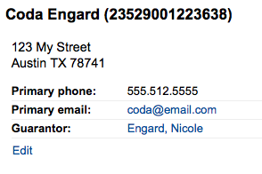
On the guarantor’s record, all children and/or professionals will be listed

If the age of the patron is outside the age range defined in their patron category a warning will appear on their record.
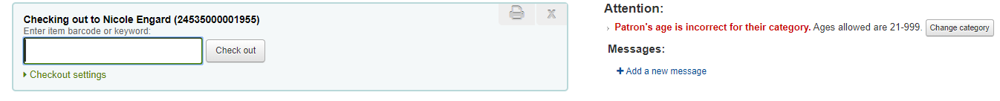
Circulation summary
Below the patron’s information on the details screen is a tabbed display of the items they have checked out, overdue, and on hold.
Checkouts
The first tab shows the items the patron currently has checked out.

Note
You can customize the columns of this table in the ‘Table settings’ section of the Administration module (table id: issues-table).
Relatives’ checkouts
If they have family at the library, staff can see what the other family members have checked out.
Charges
The Charges tab will only show in the patron accounts that have unpaid amounts or unused credits.
The tab will show the total amount, without any details. To see the details, go to the accounting tab.

Holds
If the patron has holds, the number of holds will appear on this tab’s title and the details will appear in the tab.
Note
The barcode and call number will only appear on item-level holds or holds that have been confirmed. Record-level holds that are not waiting to be picked up will not have barocdes or call numbers.
From here you can manage the patron’s holds: change the pickup library, cancel or suspend holds.
Note
You will only be able to suspend holds if the SuspendHoldsIntranet system preference is set to “Allow”.
Note
If, when suspending a hold, you want to be able to set a date at which to automatically resume the hold, set the AutoResumeSuspendedHolds system preference to “Allow” and make sure the unsuspend_holds cron job is activated.
Article requests
If the ArticleRequests system preference is enabled, and the circulation rules allow it, the patrons will be able to request articles, either through the OPAC or in the staff interface.
The details of the patron’s request, and its status, are visible in this tab.

Restrictions
The Restrictions tab will show for all patrons. If the patron has no restrictions you will see that on the tab.

If the patron has restrictions on their account the tab will show the number and the description.
- There are four kinds of restrictions:
Manual
Overdues
Suspension
Discharge
Using the ‘Add manual restriction’ button you can add a restriction to the patron record from here. This can be used for any type of restriction you need to put manually on a patron record.
The overdues restrictions are automatically set when overdue notices are sent if you specified you wanted the patron restricted in the Overdue notice/status triggers tool.
This restriction will not be removed automatically when the overdue items are returned unless the AutoRemoveOverduesRestrictions system preference is set to ‘Do’.
In the circulation rules, you can choose to fine users by suspending them instead of (or in addition to) fining them money. In that case, returning an overdue document will trigger a suspension restriction.
Patrons may also be restricted if you have issued a discharge for them. Once the discharge is validated, the patron is automatically restricted.
Restrictions on a patron record will block checkouts. In fact, a message will appear in red when going to the checkout page.
Restrictions may also prevent renewing items if the RestrictionBlockRenewing system preference is set to ‘block’.
On the OPAC, patrons will get a message saying their account is frozen. They will not be able to place holds from the OPAC.
If you have patrons that have more than one restriction, you can choose to cumulate their restriction periods or not through the CumulativeRestrictionPeriods system preference.
Note
If you want to restrict patrons from doing various actions if their record is not pristine, check the following system preferences:
Set the OverduesBlockCirc system preference to ‘Block’ to prevent patrons who have overdue materials from checking out other materials.
Set the OverduesBlockRenewing system preference to ‘block renewing for all the patron’s items’ or ‘block renewing only for this item’ to prevent patrons who have overdue materials from renewing their loans.
Enter values in the noissuescharge and NoIssuesChargeGuarantees system preferences in order to block checking out to patrons who have more than a certain amount in fines or to patrons whose guarantees owe more than a certain amount.
Enter a value in the maxoutstanding system preference to prevent patron from placing holds on the OPAC if they owe more than a certain amount.
Enter a value in the OPACFineNoRenewals system preference to prevent patron who owe more than a certain amount to renew their loans from the OPAC.
Set the BlockExpiredPatronOpacActions system preference to ‘Block’ if you want to prevent patron whose membership has expired to place hold or renew their loans from the OPAC.
Clubs
If you use patron clubs, patrons will have a tab in their record indicating which club they are enrolled in, if any.

Accounting
The patron’s complete accounting history will appear on the Accounting tab. The Accounting tab will show all types of charges and credits: overdue fines, membership fees, rental fees, reserve fees and any other charge you may have for patrons.

Note
You can customize the columns of this table in the ‘Table settings’ section of the Administration module (table id: account-fines).
The Transactions tab will show you the following columns:
Date: the date the charge, payment or credit was posted
In the case of fines this will be the last day that the fine was accrued
Account type: what type of charge, payment or credit it is
In cases where an account type may have an accompanying status it will be displayed alongside the accounttype in brackets.
Description of charges: a description of the charges including the due date for overdue items and a link to the item record where one is available
Barcode: if the charge is linked to a particular item, the barcode is displayed
Due date: if the charge is an overdue fine, the due date is displayed
Checkin date: if the charge is an overdue fine, the checkin date is displayed
Checkout date: if the charge is an overdue fine, the check out date is displayed
Home library: if the charge is linked to a particular item the home library is displayed
Note: any notes about this charge/payment
If you’re allowing patrons to pay fines via the OPAC with PayPal (EnablePayPalOpacPayments) you will see a Note that says ‘PayPal’ for items paid this way
Amount: the total amount of the payment or charge
Outstanding: the amount still due on charge
Actions:
A selection of actions available to take upon the account line as detailed below
At the top of the table you can click the ‘Filter paid transaction’ to hide all completed transaction and above that you can use the search box to find a specific charge or payment.
Actions
Action buttons will be available for the different account lines depending on the users available permissions and the account type and status.
A button to print a receipt for that line item
A button to show further details about the charge and any payments that have been made
A button to void (reverse) a payment/credit
This button will only appear on a payment/credit line. Upon voiding the line it will reverse the payment process restoring the amountoutstanding for any debts/debits which the payment/credit may have previously been used to offset. This action is most commonly used to correct cases where a payment was recorded but never actually recieved. The credit line will be set to a zero amount and updated to VOID.
A button to cancel (remove) a charge/debit
This button will only appear on a charge/debit line that has not already had any payment/credits applied to it. Upon cancelling the line it will be marked as ‘Cancelled’ and a CANCELLATION line will be added and offset against it. This action is most commonly used to correct cases where a charge was made mistakenly.
A button to pay against charges/debits with outstanding amounts
This button will appear against any charge/debit with an outstanding amount. The subsequent page can be used to pay or writeoff the line partially or in full with a PAYMENT or WRITEOFF line will being added.
A button to issue a payout of credit
This button will appear against any credit line that has an amount outstanding and you have the payout permission. It allows the librarian to return outstanding credit to the patron and record the action with a PAYOUT line.
A button to issue a refund against a charge/debit
This button will appear against any charge/debit line that has been paid or partially paid and you have the refund permission. The subsequent modal dialogue will allow you to partially or fully refund the offset debt, either in CASH or by means of a credit added to the account.
A button to apply a discount to a charge/debit
This button will appear against any charge/debit which has not already been offset by a credit/payment and you have the discount permission. The subsequent modal dialogue will allow you to add a discount upon the charge.
Charging fines/fees
Most fees and fines will be charged automatically if the fines cron job is running. Fines will also be charged when an overdue item is checked in if the CalculateFinesOnReturn system preference is enabled.
Fines will be charged based on your circulation and fines rules
Hold fees will be charged based on the rules you set in the Patron types and categories administration area
Rental fees will be charged based on the settings in your Item iypes administration area
Marking an item ‘Lost’ via the cataloging module will automatically charge the patron the replacement cost for that item
Creating a patron in a category with an enrollment fee.
Renewing a patron account in a category with an enrollment fee.
Article request fees will be charged based on the article request fees section of the circulation rules page.
Pay and Writeoff fines
Each line item can be paid in full (or written off) using the ‘Pay charges’ tab. You can switch between ‘Pay’ and ‘Write off’ mode using the buttons located at the top of this tab if you are part way through a transaction.

Note
You can customize the columns of this table in the ‘Table settings’ section of the Administration module (table id: pay-fines-table).
Each line item can be paid in full, partially paid, or written off.
Pay a fine in full
If you have a note about the payment please type that first then move on
Click “Pay” next to the fine you want to pay in full
The full amount of the fine will be populated for you in the “Collect from patron” box
There is a change feature included in this payment process. An option to specify how much money was collected when paying a fine, as well as defining how much was paid on the fine. If these numbers are different (i.e. more money was collected) a popup displaying the amount of change to be given will be displayed and require confirmation before proceeding
If one or more values are defined under the PAYMENT_TYPE authorized value category a dropdown selection box will be displayed to specify a custom payment type.
If the UseCashRegisters system preference is enabled, you will have a choice of cash register in which to enter the transaction
Click “Confirm”
The fine will be removed from outstanding fines, and displayed as fully paid.
Note
If the FinePaymentAutoPopup system preference is enabled a print dialogue window will display. If change was given for this trancaction the details will be included when using this system preference.
In addition to printing receipts you can enable email receipts for payment and writeoff transactions with the UseEmailReceipts system preference.
Pay a partial fine
Click “Pay” next to the fine you want to partially pay
Enter the amount you are collecting from the patron in the “Collect from patron” box

Click “Confirm”
The fine will be updated to show the original amount, and the current amount outstanding
Pay an amount towards all fines
Click the “Pay amount” button
Enter the amount you are collecting from the patron in “Collect from patron.” The sum of all fines is shown in “Total amount outstanding”

Click “Confirm”
The fine totals will be updated with the payment applied to oldest fines first.
Pay selected fines
Check the selection boxes next to the fines you wish to pay, click “Pay selected”
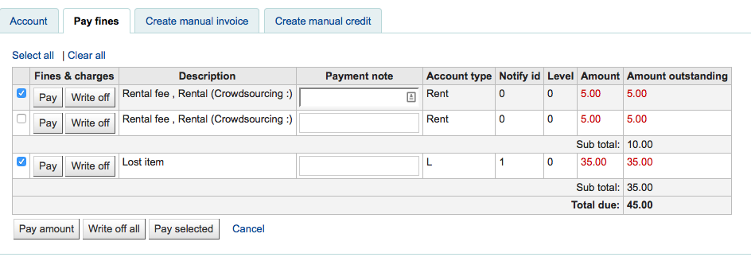
Enter an amount to pay towards the fines.

Click “Confirm”
The fine totals will be updated with the payment applied to the oldest selected fines first.
Writeoff a single fine
Click “Writeoff” next to the fine you wish to writeoff.
A confirmation box will appear to specify a total amount to writeoff. This box allows a partial writeoff of fines.
The fine will be removed from outstanding fines, and displayed as written off.
Writeoff selected fines
Check the selection boxes next to the fines you wish to pay, click “Writeoff selected”.
Click “Confirm”.
The fine will be removed from outstanding fines, and displayed as written off.
Writeoff all fines
Click the “Writeoff all” button
All fines will be removed from outstanding fines, and displayed as written off.
Cancel fines or fees
If a user was charged for something and it’s an error, you can cancel the fee by clicking the ‘Cancel charge’ button in the Actions column.

Once clicked a new line will be added to the account for a ‘Cancelled charge’ of the same amount as the cancelled charge. The charge that was cancelled will now have the ‘Cancelled’ status and the amount outstanding will be 0.
If you cancelled a charge by mistake, you can void the cancellation (see Void payments below).
Void payments
If you accidentally mark and item as paid, you can reverse that line item by clicking ‘Void’ to the right of the line
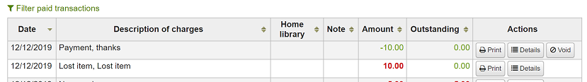
Once clicked a new line item will be added to the account showing the payment as ‘Voided’. The payment line is added back to the Pay fines tab as an outstanding charge.
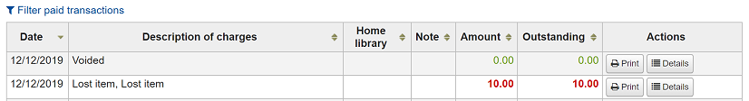
Creating manual invoices
For fees that are not automatically charged, librarians can create a manual invoice

First choose the type of invoice you would like to create
To add additional values to the manual invoice type pull down menu, add them to the debit types in the Administration module.
If the fee is associated with an item you can enter its barcode so that the line item shows a link to that item
The description field is where you will enter the description of the charge
In the amount field, do not enter currency symbols, only numbers and decimals
Creating manual credits
Manual credits can be used to pay off parts of fines, or to forgive a fine amount.
First choose the type of credit you’d like to apply
If this credit is associated with an item you can enter that item’s barcode so that the line item links to the right item
The description field is where you will enter the description of the credit
In the amount field, do not enter currency symbols, only numbers and decimals
Printing invoices
To the right of each account line there is a print link. Clicking that link will print an invoice for the line item that includes the date and description of the line item along with the total outstanding on the account.

Routing lists
A list of all of the serial routing lists the patron belongs to will be accessible via the ‘Routing lists’ tab on the patron record.

On this tab you will be able to see and edit all of the routing lists that this patron is on.
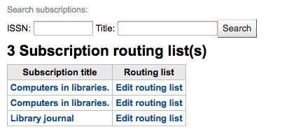
Circulation history
The circulation history tab will appear if you have set the intranetreadinghistory preference to allow it to appear. If you have the OPACPrivacy system preference set to ‘Allow’ and the patron has decided that the library cannot keep this information this tab will only show currently checked out items.

Note
You can customize the columns of this table in the ‘Table settings’ section of the Administration module (table id: checkouthistory-table).
If you would like to export a list of barcodes for the items checked in today you can find that option under the More menu on the top right of the page.

This will generate a text file with one barcode per line.
Holds history
The holds history tab shows all the holds the patron has made, with their status.

Note
You can customize the columns of this table in the ‘Table settings’ section of the Administration module (table id: holdshistory-table).
Modification log
If you have set your BorrowersLog to track changes to patron records, then this tab will appear. The Modification log will show when changes were made to the patron record. If you also have turned on the IssueLog and ReturnLog you will see checkins and outs on this screen as well.

The Librarian field shows the patron number for the librarian who made the changes
The module lists ‘MEMBERS’ for the patron module
The action will tell you what action was being logged
The Object field lists the borrowernumber that is being modified (in the example above, it was my changing my own record)
Notices
The patron’s messaging preferences are set when adding or editing the patron. This tab will show the messages that have been sent and those that are queued to be sent:

Clicking on the message title will expand the view to show you the full text of the message that was sent.

If the message has a status of sent or failed you will have the option to ‘resend’ the message to the patron by clicking the ‘resend’ button found under the status.

Statistics
Depending on what you set for the values of your StatisticsFields system preference, you can see statistics for one patron’s circulation actions.

Files
If you set the EnableBorrowerFiles preference to ‘Do’ the Files tab will be visible on the patron information page.

From here you can upload files to attach to the patron record.
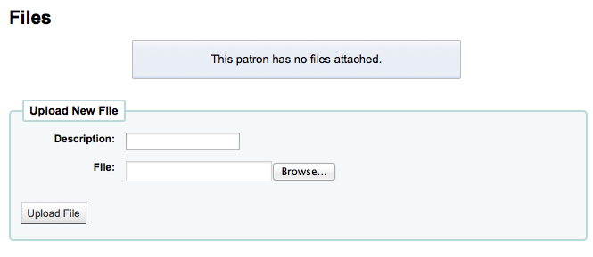
All files that are uploaded will appear above a form where additional files can be uploaded from.
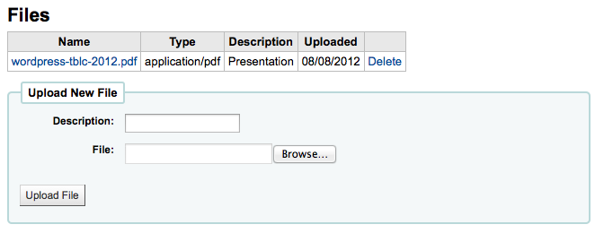
Purchase suggestions
If the patron has made any purchase suggestions you will see a purchase suggestions tab on the patron record.

From here you can see all suggestions made by the patron and their status, you can also create a purchase suggestion on the patron’s behalf by clicking the ‘New purchase suggestion’ button at the top.
Learn more about managing purchase suggestions in the Acquisitions chapter of this manual.
Patron discharges
A discharge is a certificate that says the patron has no current checkouts, no holds and owe no money. To enable this opti`on on the patron record you need to set the useDischarge system preference to ‘Allow’.
Note
In France a “quitus” (“discharge”) is needed if you want to register for an account in a library or a university.
Note
Academic libraries often require that you have a clear record at the library before you can graduate.
Patrons can request discharges via the OPAC. Any pending discharges will be listed below the menu buttons on the main staff client page

Clicking the pending requests will open a screen where you can allow those discharges

To generate a discharge for a specific patron click the ‘Discharge’ tab on the left of the patron record
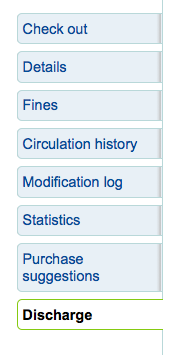
If the patron can have a discharge generated then it will have a button that says ‘Generate discharge’
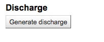
If not then you’ll see an error explaining why you can’t discharge the patron.
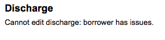
Once the letter is generated you will have a PDF to download

Note
You can style the PDF using the NoticeCSS preference.
The patron will have a restriction added to their account
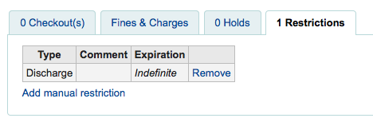
And a history of discharges will be added to the ‘Discharge’ tab

Housebound patrons
There are three roles a patron can have in regard to housebound circulation: borrower, chooser or deliverer.
Important
In order to use the housebound module, the HouseboundModule and ExtendedPatronAttributes system preferences must be enabled.
Chooser
If you have enabled the housebound module, with the HouseboundModule system preference, you will see that patrons now have a new section in their record called ‘Housebound roles’.

Click the ‘Add’ button to mark this patron as a ‘Chooser’.
The chooser is in charge of choosing the materials for the housebound patron.
Deliverer
In the ‘Housebound roles’, click the ‘Add’ button to mark this patron as a ‘Deliverer’.

The deliverer is in charge of delivering the chosen materials to the housebound patron on a specific day at a specific time.
Housebound borrowers
To create a housebound profile for an housebound patron, click on the ‘Housebound’ tab in their record.

From there, you can edit their housebound profile information.

Delivery day: choose which day (or ‘Any’) the patron prefers to receive their delivery.
Frequency: choose the frequency at which they want to receive their deliveries.
Note
The frequencies are managed through the HSBND_FREQ list of authorized values.
Preferred materials: enter notes that will help the chooser choose appropriate documents for the housebound patron.
For example: books, dvds, magazines, etc.
Subjects: if the housebound patron has a preference for particular subjects, enter it here. This will help the chooser choose interesting documents for the patron.
For example: romance, cookbooks, thrillers, etc.
Authors: if the housebound patron has favorite authors, enter them here.
For example: Danielle Steel, James Patterson, etc.
Referral: if the housebound patron has a referral, enter it here.
Notes: enter any other notes that may help the chooser or the deliverer.
Click the ‘Save changes’ button to save the housebound profile.
Coordinating deliveries
To plan visits, go to the housebound patron’s record.
In their housebound tab, you will be able to create deliveries.

Click on ‘Add a new delivery’.
Fill out the information :
Date: Enter the date of the delivery.
Time: Select a time of day for the delivery. The choices are morning, afternoon, or evening.
Chooser: Select a chooser who will be in charge of selecting the materials for this housebound patron.
Deliverer: Select a deliverer who will be in charge of picking up the materials and bringing them over to the housebound patron.

Choosers and Deliverers can be notified of planned deliveries via reports. Example reports be found in the SQL Reports Library at https://wiki.koha-community.org/wiki/SQL_Reports_Patrons#Patron_Characteristics.
Patron search
Clicking on the link to the Patron module will bring you to a search/browse screen for patrons. From here you can search for a patron by any part of their name or their card number.

Clicking the small plus sign [+] to the right of the search box will open up an advanced patron search with more filters including the ability to limit to a specific category and/or library.

You can also filter your patron results using the search options on the left hand side of the page.

Depending on what you have chosen for the ‘Search fields’ you can search for patrons in various different ways.

Standard:
Enter any part of their name, username, email address or barcode
Email:
Enter any part of their email address and choose ‘Contains’ instead of ‘Starts with’
Borrower number:
Enter the Koha borrower number
Phone number:
Enter the phone number exactly as it is in the system or by using spaces between each batch of numbers.
Example: To find (212) 555-1212 you can search for it exactly as it was entered or by searching for 212 555 1212
Street address:
Enter any part of the patron’s address (includes all address fields) and choose ‘Contains’ instead of ‘Starts with’ to find the string anywhere in the address
Date of birth
Birth dates should be entered using the format set forth in the dateformat preference.
Sort field 1
This is a custom field that libraries can use for any type of data about the patron.
Sort field 2
This is a custom field that libraries can use for any type of data about the patron.
You can also choose to either search for fields that start with the string you entered or contain the string. Choosing ‘Contains’ will work like a wildcard search.
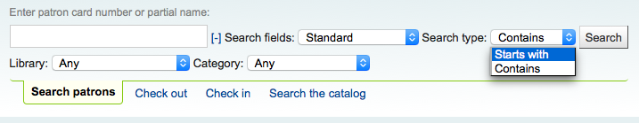
You can also browse through the patron records by clicking on the linked letters across the top.

If your search only returns one result, you will be taken directly to the patron’s file. If your search returns more than one result, you will be given a list from which to choose.
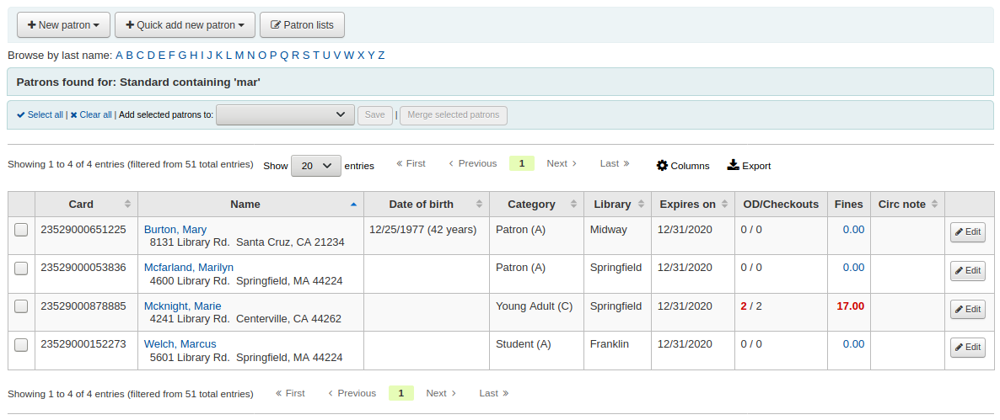
Note
You can customize the columns of this table in the ‘Table settings’ section of the Administration module (table id: memberresultst).
Communicating with patrons
Koha offers several options for communicating with patrons, some of which have already been covered in this chapter.
OPAC notes
OPAC notes are added to the patron’s file through the add patron form or the edit patron form, in the ‘Library set-up’ section.
They show up in the ‘Your summary’ section of the patron’s online account in the OPAC.
In the staff interface, OPAC notes will be in the ‘Library use’ section of the patron’s file.
OPAC messages
OPAC messages are added to the patron’s file using the ‘Add message’ button.
To leave a message that the patron will be able to see in the OPAC, choose “OPAC - Patron’s name” in the ‘Add a message for’ field. Enter your message in the box, or choose a predefined message in the drop-down menu.
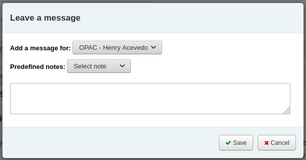
Note
Predefined messages are added in the BOR_NOTES authorized value category
Once saved, the patron will be able to see the message in the ‘Your summary’ section of their online account. The patron will also be able to see the date on which the message was added as well as the name of the branch.
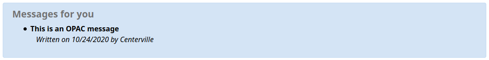
In the staff interface, OPAC messages are shown on the patron’s detail page, at the top of the page just under the row of action buttons.

It will also appear on the checkout page, to the right of the checkout box.

Advance notices and hold notices
If you have enabled the EnhancedMessagingPreferences system preference, you cat set advance notices as well as hold notices when adding a new patron or editing a patron.
If the EnhancedMessagingPreferencesOPAC system preference is set to ‘show’, patrons will be able to modify their messaging preferences in their online account.
Item due: A notice on the day and item is due back at the library
Customize this notice by editing the DUE or DUEDGST notices in the Notices & slips tool
Advance notice: A notice in advance of the patron’s items being due (the patron can choose the number of days in advance)
Customize this notice by editing the PREDUE or PREDUEDGST notices in the Notices & slips tool
Hold filled: A notice when you have confirmed the hold is waiting for the patron
Customize this notice by editing the HOLD notice in the Notices & slips tool
Item check-in: A notice that lists all the of the items the patron has just checked in
Customize this notice by editing the CHECKIN notice in the Notices & slips tool
Item checkout: A notice that lists all the of the items the patron has just checked out and/or renewed, this is an electronic form of the checkout receipt
Customize this notice by editing the CHECKOUT notice in the Notices & slips tool
Auto renewal: A notice that notifies the patron that their checkouts have been automatically renewed, or if there was a problem with their automatic renewal.
Customize this notice by editing the AUTO_RENEWAL or AUTO_RENEWAL_DGST notice in the Notices & slips tool
This option will only appear if the AutoRenewalNotices is set to “according to patrons messaging preferences”
Patrons can choose to receive their notices as a digest by checking the ‘Digest only’ box along with the delivery method. A digest is a combination of all the messages of that type (so all items due in 3 days in one email) in to one email instead of multiple emails for each alert.
The delivery methods currently supported are:
Email
SMS (text messages)
Automated phone call system
Print
To generate the advance notices (advance notice and item due), you need to run the advance_notices.pl cronjob. Then, the process_message_queue.pl cronjob will send the notices or the gather_print_notices.pl cronjob will gather them in a nice file you can print out and send out via regular mail.
Overdue notices
Overdue notices are managed in Notices & slips and when they are sent is managed in Overdue notice/status triggers.
Patrons cannot opt out of receiving overdue notices like they can other notices (such as advance notices or hold notices)
To generate the overdue notices , you need to run the overdue_notices.pl cronjob. Then, the process_message_queue.pl cronjob will send the notices or the gather_print_notices.pl cronjob will gather them in a nice file you can print out and send out via regular mail.